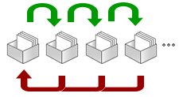

El método Leitner es una técnica para retener información y memorizar conceptos desarrollada por el psicólogo alemán Sebastian Leitner en los años 70. Se trata de un sistema que aprovecha las ventajas de las técnicas de aprendizaje espaciado para consolidar los conocimientos y evitar la curva del olvido.
Como ya te hemos avanzado, se trata de una forma de repaso diferente y creativa gracias a estas tarjetas de estudio (como las del Trivial) con las que podrás afianzar tus conocimientos. Además, sirve para romper con la rutina de estudio, ayudando así a mantener la concentración durante la jornada y aprovechar al máximo cada minuto de estudio.